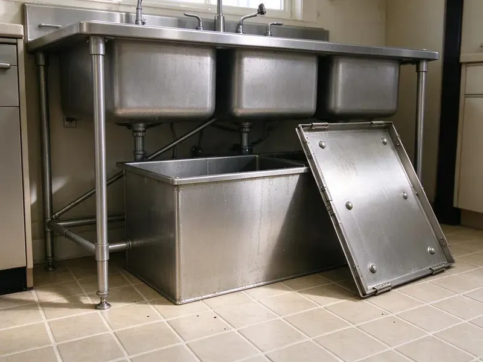

Grease Trap Repair in Tacoma, WA
Grease showing up downstream of your trap in Tacoma, WA? We find out why and fix the trap.
- Licensed and Insured
- Work Guaranteed
- Pump, Repair and Flow Test
- After-Hours Service

Get Your Grease Trap Repaired in Tacoma, WA
A broken trap can shut a kitchen down. Call now and we will get a truck headed your way.
Grease Trap and Interceptor Repair in Tacoma, WA
A broken grease trap shows up as a slow sink by the dish station or a letter from the pretreatment office. Those two symptoms point to different failures. We pump the trap, look at every part inside it, and run water through to watch how it behaves, then explain in plain terms what failed and what it costs to fix. There is no guesswork in it.
Work we handle every week:
- Restore spalled concrete interceptor walls
- Clear stubborn grease clogs in traps and lines
- Replace corroded steel trap parts

Additional Kitchen Plumbing Services in Tacoma, WA
Our kitchen plumbing services in Tacoma, WA cover sinks, disposals, dishwashers, and grease traps so your kitchen stays clean, safe, and fully functional.


Customers
Why Choose FHN Plumbing for Grease Trap Repair in Tacoma, WA?
Missing outlet tees are the single most common repair we make. Pumpers sometimes knock them off. Without the tee, the outlet draws from the top of the tank, right where the grease floats, and the trap sends grease to the sewer while looking perfectly fine from above. A new tee takes about thirty minutes.
- Preventive Advice, We measure the trap and suggest a pumping schedule that fits your kitchen.
- Prevent Backups, A working trap keeps grease from plugging your lines and sewage off the kitchen floor.
- Specialized Tools, Jetters and sewer cameras let us find the blockage and clear it instead of guessing.
Citywide Coverage
Indoor traps under three-compartment sinks and outdoor interceptors under the parking lot are both on our list. Both kinds come through our schedule every week. For buried tanks we bring a vacuum truck partner, and for indoor units the plumber can usually pump the trap by hand into sealed drums and carry it out the back door. The waste is hauled to a permitted facility.
Experienced Team
Zurn, Watts, Schier, Thermaco and Endura traps all come through our shop. Each brand has its own weak point, and our crew knows them. Schier units are tough polyethylene but the lid gaskets wear, older steel Zurn and Watts traps rust out at the bottom seams, and Big Dipper automatic units need their skimmer wheel and heater checked. We order by model number, not by guess.
Safety-First Approach
Every repair meets the local plumbing code and the pretreatment rules for your sewer district. Where a permit is needed, we pull it. We also leave the trap with its sample port open and accessible and its lid secure, since inspectors check both, and a trap that works but cannot be sampled can still get written up. Small details, real fines.
Trusted Certified Tacoma Plumbing Services Professionals
At FHN Plumbing, we take pride in licensed, certified plumbing services throughout Tacoma, WA. Those papers on the wall mean something. Every repair, install and maintenance visit follows strict safety and quality rules, and the plumbers doing the work carry recognized industry credentials.
Call Us Now PHCC Plumbing Contractor Recognition
PHCC Plumbing Contractor Recognition Better Business Bureau (BBB) Accreditation
Better Business Bureau (BBB) Accreditation Angi Certified Pro
Angi Certified Pro ISO 9001 Quality Management Certification
ISO 9001 Quality Management CertificationGrease Trap and Interceptor Repair in Tacoma, WA
Lid, Gasket and Riser Repair in Tacoma, WA
Outdoor risers take a beating from garbage trucks and the occasional forklift. Once a riser cracks, rainwater and grit wash straight into the tank. We replace damaged risers and set traffic-rated covers, H-20 rated where vehicles cross, and seal the riser joints with butyl rope so the tank stays tight. Pedestrian lids in a drive lane are a liability.

Grease Trap Leak Repair in Tacoma
Plastic and fiberglass trap bodies do not rust, but they can crack from a dropped lid or a dishwasher dumping water hotter than the trap is rated for. A hairline crack can sometimes be welded. Anything through the floor of the tank or along a molded seam we treat as a replacement, because patches there fail under the weight of a full trap. You will see the crack yourself before we suggest a fix.
Commercial Grease Trap Repair in Tacoma
Restaurants, school cafeterias, hospital kitchens and bakeries all push more grease than a small trap can hold. Undersized traps fail in predictable spots. The inlet tee clogs, the outlet tee gets coated, and grease starts showing up in the sewer manhole down the street, which is usually how the city finds out before the owner does. We fix the failed parts and tell you plainly if the trap is too small for the kitchen.
Hydro-Jetting for Grease Trap Repair in Tacoma
A cable machine punches a hole through grease. A jetter scrubs the whole pipe wall instead. We run a commercial jetter at 3,000 to 4,000 PSI through the line feeding the trap and the line leaving it, working from the cleanout toward the main. With old cast iron, we turn the pressure down and keep a camera on it, since a thin wall can blow out.
Grease Interceptor Clog Removal in Tacoma
Grease does not stay liquid for long once it cools in a pipe. It sets up like candle wax on the crown of the line. Chemical drain openers soften it for a day and then it re-forms farther downstream, sometimes past the trap entirely, where it becomes a sewer problem instead of a kitchen problem. A jetter actually takes it out of the line.
Flow Control Device Repair in Tacoma
Hydromechanical traps are rated by flow, like 20 or 50 gallons per minute, and the flow control fitting is what holds the water to that rate. Take it out and a three-compartment sink dump blows grease right past the baffles. Inspectors look for it. We also clear the air intake, since a plugged intake on the flow control fitting lets the trap siphon.
Baffle Repair and Replacement in Tacoma
Inside a concrete gravity interceptor the baffle is usually a poured or precast wall with a crossover opening. A crumbling wall lets grease slip into the second compartment and out the outlet. We can rebuild the wall with form work and a sulfate-resistant mix or set a polyethylene baffle panel, depending on the tank. Either way, it needs a full pump-out first.

Inlet and Outlet Tee Repair in Tacoma, WA
Tees are cheap parts with an outsized job. The inlet tee sends flow down below the grease layer. The outlet tee draws water from low in the tank, well under the grease cap, so if it breaks off or someone removes it during pumping, floating grease walks right out to the sewer. New tees go in as Schedule 40 PVC, cut to the drop length the manufacturer or local code specifies.
Local Grease Trap Repair Near Me in Tacoma, WA
Searching for grease trap repair near me usually happens with water already on the floor. What you need is a crew nearby that shows up with a pump and parts. Our commercial plumbers work out of Tacoma, WA and know what the local pretreatment inspectors check and how they want a repair documented. We can usually be on site the same day.
Restaurant owners who look up grease trap repair nearby usually have an inspection coming up or a violation notice in hand. Bring us the notice and we will repair exactly what the inspector wrote up. Some items are paperwork, like a missing maintenance log. Others are physical repairs.
FHN Plumbing at a Glance
- Licensed and insured plumbers serving Tacoma, WA
- Same-day appointments and 24/7 emergency response
- Upfront, flat-rate pricing before work begins
- 4.9-star rated by 382+ Washington customers
Tacoma Map
Tacoma Information
- Population
- 222,906
- Area codes
- 253/360/425
- Service area
- Tacoma and communities within 40 miles
- Nearby
- Lakewood, Federal Way, South Hill, Auburn
Kitchens in Tacoma, WA send grease down the drain every day, and a trap with a broken baffle or a missing tee lets it slip into the sewer main, where it turns into fines and backups.
Expert Services
Call FHN Plumbing for honest, reliable plumbing from people who know the trade in Tacoma, WA.
Our Specialized Plumbing Services in Tacoma, WA
At FHN Plumbing, we handle the full list of plumbing services across Tacoma, WA. From leak detection to full system installs, our team works fast and charges fair prices on homes and commercial properties alike. Here are the core services we offer:


How Our Grease Trap Repair Visits Work in Tacoma, WA
Each grease trap repair in Tacoma, WA comes down to three steps.
Request a Quote
Call (425) 491-3131 and describe what you are seeing. We set a time for a plumber to visit your Tacoma location.
On-Site Diagnosis
The plumber pumps the trap if needed and checks the baffles, tees and lid. A camera goes down the lines when the problem is past the trap.
Expert Repair
Once you approve the estimate, we make the repair with the right parts. Then we flow test the trap before we leave your Tacoma kitchen.
Frequently Asked Questions About Grease Trap Repair in Tacoma
Minor clog clearing usually runs $200 to $400. Baffle replacement or a larger leak repair is more like $500 to $1,500. Concrete interceptor repairs, riser replacements and anything that needs excavation can go higher, and we give you a written estimate after inspecting the trap so you are not working from a phone guess. After-hours visits carry a higher rate.
Slow sinks at the dish station, a sour smell near the trap, and grease showing up in the outlet or the next manhole are the usual signs. By the time it overflows onto the floor, it has been failing for a while.
It can. Many cities issue a notice or a fine when grease shows up downstream or a trap fails inspection.
Yes. Our labor is warrantied, and parts carry the manufacturer warranty on top of that. The exact terms are written on your invoice, so you know how long each part is covered.
Yes, parts and labor are both covered. The terms are written into your service paperwork.
We repair Zurn, Watts, Schier, Thermaco, Endura, Rockford and most other commercial trap brands, along with poured and precast concrete interceptors. Parts get ordered by model number, and common ones ride on the truck.
Gasket and clog work almost never needs one. Structural repairs or a change to the piping layout can. We check with the Tacoma building department before major work and tell you up front if a permit and inspection will be part of the job. Permit fees get listed separately.
Size and location are the main difference. A grease trap is a small hydromechanical unit, usually indoors under or near the sink. An interceptor is a large gravity tank, often 750 gallons or more, buried outside the building and sized for high-volume kitchens. Both separate grease the same way.
Hear From Customers Who Hired Our Plumbing Experts

Lisa C.
Water was pouring out from under the washing machine on a holiday weekend. FHN Plumbing talked me through closing the valves over the phone and had a plumber at the house within ninety minutes. It was a burst fill hose.
Emergency Plumbing · Auburn, WA
Monica A.
Our water bill nearly doubled in one month with no change in how we used water. The tech checked the meter, heard the leak under the hallway with his equipment, and opened a hole about a foot square. Fixed the same day.
Slab Leak Repair · Federal Way, WA
Carlos V.
Our house still had galvanized pipe, and upstairs the shower was a trickle. The crew repiped everything in PEX over three days and patched every drywall hole before they left. The pressure difference is night and day.
Repiping · Auburn, WA
Mark T.
The floor drain in our office break room backed up every few weeks. The plumber ran a cable, then put a camera down and found roots at a joint about thirty feet out. Seeing it on the screen made the decision easy.
Drain Cleaning · South Hill, WABrian W.
I smelled gas behind the dryer and called right away. The plumber found a corroded flex connector, replaced it, and pressure tested the whole line before turning the gas back on. He let me watch the gauge hold steady for fifteen minutes.
Gas Line Repair · Burien, WAJessica T.
We were adding a gas range in a kitchen remodel and needed a new line run from the meter. The plumber pulled the permit, ran the pipe through the crawl space, and had it inspected and approved within the week.
Gas Line Repair · South Hill, WA